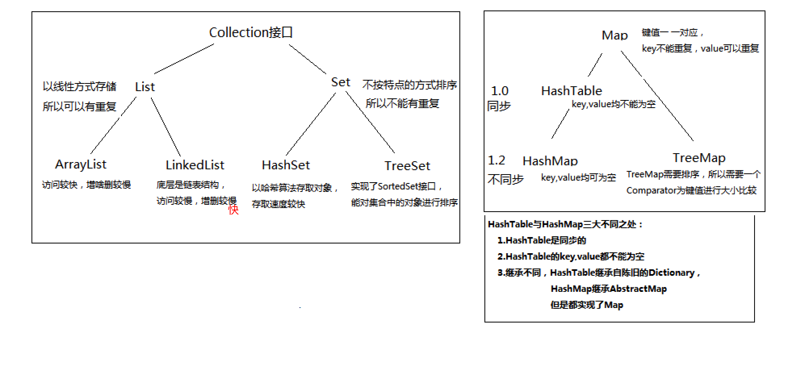
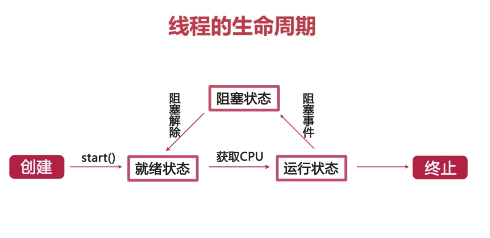
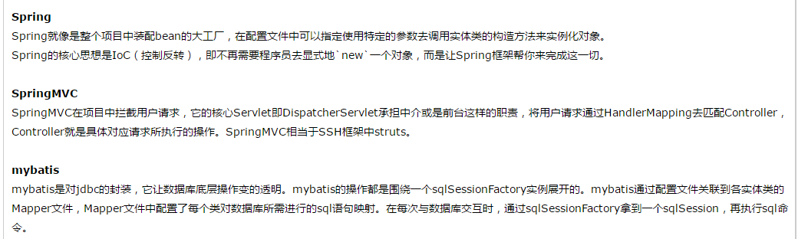
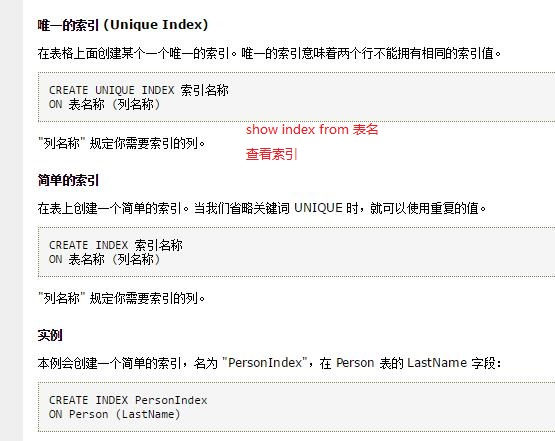

2018
项目情况
- 项目介绍
JavaSE
集合
- 集合概述
- list与set的异同
hashtable与hashmap异同
以上三点可以从下图简要分析(集合总结2.png):

map底层实现原理
JVM
JVM
JVM是Java Virtual Machine（Java虚拟机）的缩写，
JVM是一种用于计算设备的规范，它是一个虚构出来的计算机，是通过在实际的计算机上仿真模拟各种计算机功能来实现的。
Java虚拟机包括一套字节码指令集、一组寄存器、一个栈、一个垃圾回收堆和一个存储方法域。
JVM屏蔽了与具体操作系统平台相关的信息，使Java程序只需生成在Java虚拟机上运行的目标代码（字节码）,就可以在多种平台上不加修改地运行。
JVM在执行字节码时，实际上最终还是把字节码解释成具体平台上的机器指令执行。
JVM调优
JVM三大性能调优参数：-Xms –Xmx –Xss -Xms –Xmx是对堆的性能调优参数，一般两个设置是一样的， 如果不一样，当Heap不够用，会发生内存抖动。一般都调大这两个参数，并且两个大小一样。 -Xss是对每一个线程栈的性能调优参数,影响堆栈调用的深度借助于示例理解：
对于JVM内存配置参数： -Xmx10240m -Xms10240m -Xmn5120m -XXSurvivorRatio=3 其最小内存值和Survivor区总大小分别是（） 10240m，2048m --------------------------------------解析---------------------------------------------------- -Xmx10240m：代表最大堆 -Xms10240m：代表最小堆(初始堆大小) -Xmn5120m： 代表新生代 -XXSurvivorRatio=3：代表Eden:Survivor = 3 根据Generation-Collection算法(目前大部分JVM采用的算法)，一般根据对象的生存周期将堆内存分为若干不同的区域， 一般情况将新生代分为Eden+两块Survivor； 计算Survivor大小， Eden:Survivor = 3，总大小为5120,3x+x+x=5120 x=1024 新生代大部分要回收，采用Copying算法，快！ 老年代 大部分不需要回收，采用Mark-Compact算法JVM调优相关1.png

https://www.nowcoder.com/questionTerminal/970cdaaa4a114cbf9fef82213a7dabca
多线程
线程和进程
1.进程和线程都是一个时间段的描述，是CPU工作时间段的描述，不过是颗粒大小不同
2.进程中包含线程
3.举例：
开个QQ，开了一个进程；开了迅雷，开了一个进程。
在QQ的这个进程里，传输文字开一个线程、传输语音开了一个线程、弹出对话框又开了一个线程。线程创建方式
1.继承Thread类
class MyThread extends Thread{ ...... @Override public void run(){ ...... } } MyThread mt = new MyThread();//创建线程 mt.start();//启动线程2.实现Runnable接口
class MyThread implements Runnable{ ...... @Override public void run(){ ...... } } MyThread mt = new MyThread(); Thread td = new Thread(mt);//创建线程 td.start();//启动线程对比总结
无论用哪种方法，都要new一个Thread类对象，用Thread类的start方法来启动线程。
线程生命周期(线程生命周期2.png)

线程各个状态
就绪状态
创建线程对象后，调用了线程的start()方法（此时线程只是进入了线程队列，等待获取CPU服务（cpu可能正在执行其他程序），具备运行条件，但是并不一定已经开始运行了）运行状态
处于就绪咋混个太的线程，一旦线程获取到CPU的服务之后，就进入到了运行状态，开始执行run()方法里面的逻辑。终止
线程的run()方法执行完毕，或者人为线程调用了stop()方法（该做法已经被淘汰），线程便进入终止状态。阻塞
一个正在执行的线程在某些情况下，由于某种原因而暂时让出了CPU资源，暂停了自己的执行，便进入了阻塞状态，如调用 sleep()方法。
JDK
- JDK7和JDK8的异同（JDK8的新特性）
框架部分
springmvc的单例模式
即：spring MVC中的controller是单例模式，但是是多线程，各个线程之间不影响！
设置为多例模式：@Scope(“prototype”)
@RestController @RequestMapping(value = "hello") @Scope("prototype") public class HelloController {mybatis与hibernate异同
Spring的AOP与IOC
spring是J2EE应用程序的开源框架，是轻量级的IoC和AOP的容器框架，可以单独使用，也可以和其他框架组合使用AOP：
java面向对象思想的拓展，将系统中非核心的业务提取出来，进行单独处理。比如事务、日志和安全等体现java的灵活。 spring中面向切面的实现有两种方式，一种是动态代理，一种是CGLIB，动态代理必须要提供接口，而CGLIB实现是继承。IOC与DI：
1）（IOC）控制反转：组件**依赖关系**的创建和管理置于spring容器，由容器控制，而不是由代码直接控制，将控制权转向了容器。 2）（DI）依赖注入:组件之间的依赖关系由容器在运行期决定 ，由容器动态的将某种依赖关系注入到组件之中，实现的程序的解耦。spring中有三种注入方式，一种是set注入，一种是接口注入，另一种是构造方法注入。
## spring websocket api
- Spring 4.0的websocket的支持
> http://wiselyman.iteye.com/blog/2003336
SSM概述(SSM概述.png)：

数据库部分
索引
数据库索引(创建索引.jpg)

JDBC
自己添加：
jdbc 多看 SQL进阶 java基础
servlet与CGI
servlet与CGI
Servlet的生命周期分为5个阶段：加载、创建、初始化、处理客户请求、卸载。 (1)加载：容器通过类加载器使用servlet类对应的文件加载servlet (2)创建：通过调用servlet构造函数创建一个servlet对象 (3)初始化：调用init方法初始化 (4)处理客户请求：每当有一个客户请求，容器会创建一个线程来处理客户请求 (5)卸载：调用destroy方法让servlet自己释放其占用的资源
JSP九大内置对象
JSP九大内置对象
内置对象特点:
1.由JSP规范提供,不用编写者实例化 2.通过Web容器实现和管理 3.所有JSP页面均可使用 4.只有在脚本元素的表达式或代码段中才可使用(<%=使用内置对象%>或<%使用内置对象%>)常用内置对象:
1.输出输入对象:request对象、response对象、out对象
2.通信控制对象:pageContext对象、session对象、application对象
3.Servlet对象:page对象、config对象
4.错误处理对象:exception对象
String、StringBuffer、StringBuilder
区别
String：适用于少量的字符串操作的情况 StringBuilder：适用于单线程下在字符缓冲区进行大量操作的情况 StringBuffer：适用多线程下在字符缓冲区进行大量操作的情况从JVM角度分析String慢的原因
那么JVM就会像上面说的那样，不断的创建、回收对象来进行这个操作了。速度就会很慢。StringBuffer与StringBuilder
StringBuilder是线程不安全的，而StringBuffer是线程安全的 StringBuffer JDK1.0出现 StringBuilder JDK1.5出现
mybatis缓存
2019
spring中使用了哪些设计模式？
https://juejin.im/entry/5c6611a2f265da2de1658a13
JDK动态代理和CGLIB动态代理
https://juejin.im/post/5c3e9c37f265da61263862f1
https://juejin.im/post/5bbff7daf265da0aef4e330c